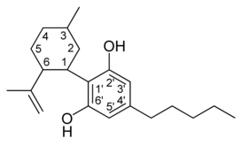
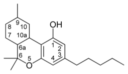
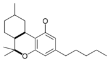

Welcome to the world of cannabis
Welcome to the world of cannabis
Navigation Menu
History and future of cannabis
Cannabis has a long and complicated history that lead to the criminalization of the plant. Cannabis is separated into two main plants the male and the female. The male plants are used in the production of hemp products such as hemp diesel, hemp plastics, clothing and much more. The female plants produce Canabanoids such as THC and CBD which can have recreational and medical uses. The classes of cannabis can be devised into 3 main groups, Sativa, Indica, and hybrid which is a mix between the two. Read more about the history of cannabis
Recently Cannabis has become federally legalized throughout Canada and talks of legalization at a federal level in the United Sates have been circulating for years. The business opportunity in the Cannabis industry is massive as there are many black market businesses that still hold significant market share. Currently the cannabis industry is discovering new medical treatments by studying the cannabanoids and the trichomes of the plant material. Once Cannabis is federally legalized in the states the demand will be even greater.
Sativa
"Cannabis Sativa is energizing with uplifting cerebral effects that pair well with physical activity, social gatherings, and creative projects." - Leafly
"Cannabis sativa is an annual herbaceous flowering plant indigenous to eastern Asia but now of cosmopolitan distribution due to widespread cultivation. It has been cultivated throughout recorded history, used as a source of industrial fiber, seed oil, food, recreation, religious and spiritual moods and medicine." - Wikipedia
Indica
"Indica strains are physically sedating, perfect for relaxing with a movie or as a nightcap before bed." - Leafly
"Cannabis indica is an annual plant in the family Cannabaceae. It is a putative species of the genus Cannabis. Whether it and Cannabis sativa are truly separate species is a matter of debate. The Cannabis indica plant is cultivated for many purposes; for example, the plant fibers can be converted into cloth. Cannabis indica produces large amounts of tetrahydrocannabinol (THC). The higher concentrations of THC provide euphoric and intoxicating effects making it popular for use both as a recreational and medicinal drug." - Wikipedia
Hybrid
"Hybrid strains are a balance of indica and sativa effects." - Leafly
The majority of strains used and seen by the average consumer is some type of hybrid plant. Although the hybrids can be Sativa or Indica dominant true sativa and Indica land races are not known to be grown or available to the consumer. Through breeding multiple different strains of cannabis there has been many new canabanoid and trichome concentrations that allow for new effects to be discovered.
Cannabanoids
"Cannabinoids are compounds found in cannabis. The most notable cannabinoid is the phytocannabinoid tetrahydrocannabinol, the primary psychoactive compound in cannabis. Cannabidiol is another major constituent of the plant. There are at least 144 different cannabinoids isolated from cannabis, exhibiting varied effects." - Wikipedia
| Type | Skeleton | Cyclization |
|---|---|---|
| Cannabidiol-type CBD |
 | 
|
| Tetrahydrocannabinol- and Cannabinol-type THC, CBN |
 |  |
Trichomes
"trichomes are the structures that produce and store the cannabinoids(such as THC, CBD, and CBN), terpenes, and flavonoids that lend their potency, aroma, and flavor to cannabis. Generally speaking, the more trichomes that are preserved on cannabis plants, the greater the effects when properly harvested, processed, and stored." - Wikileaf